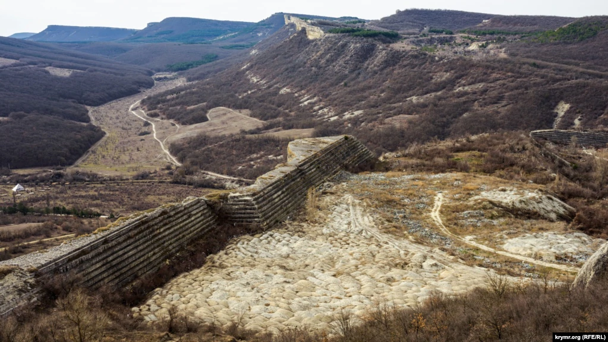
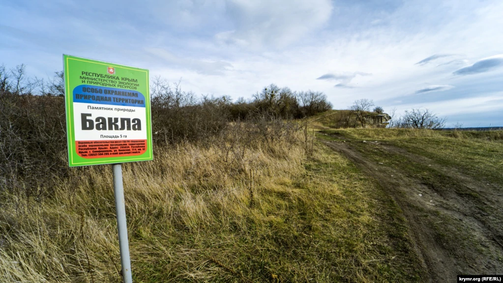
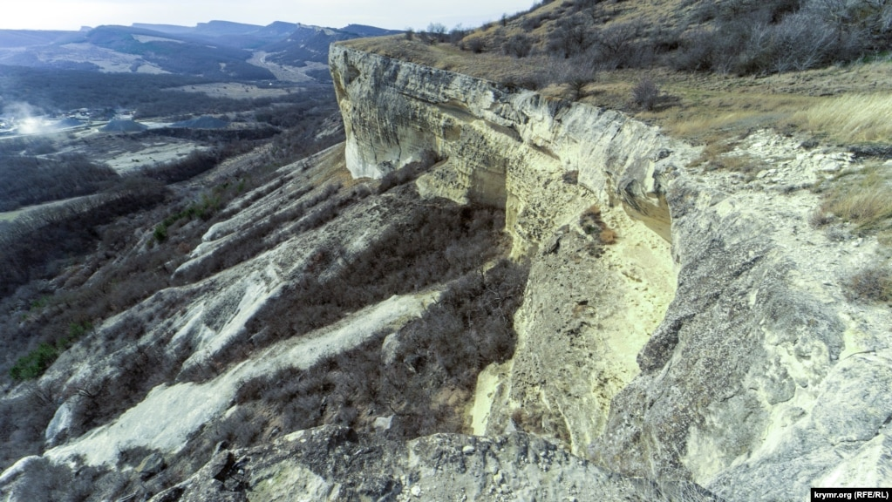
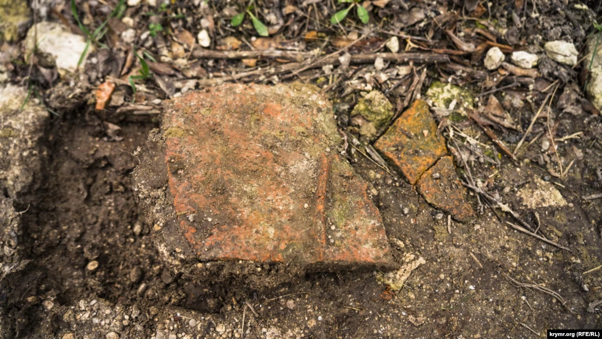
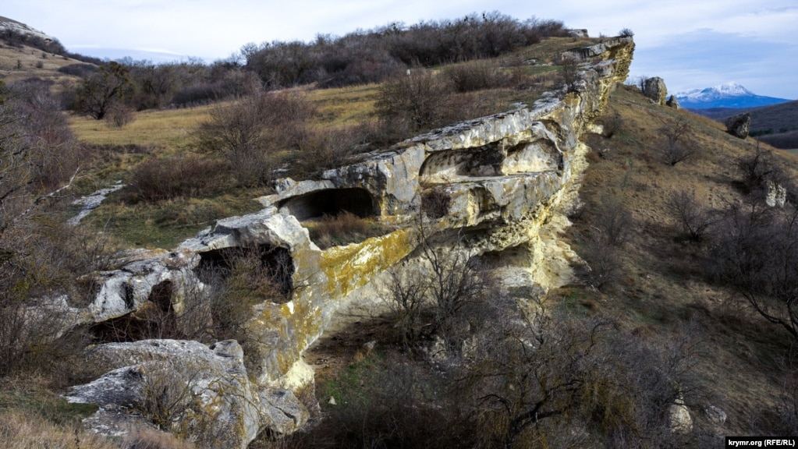
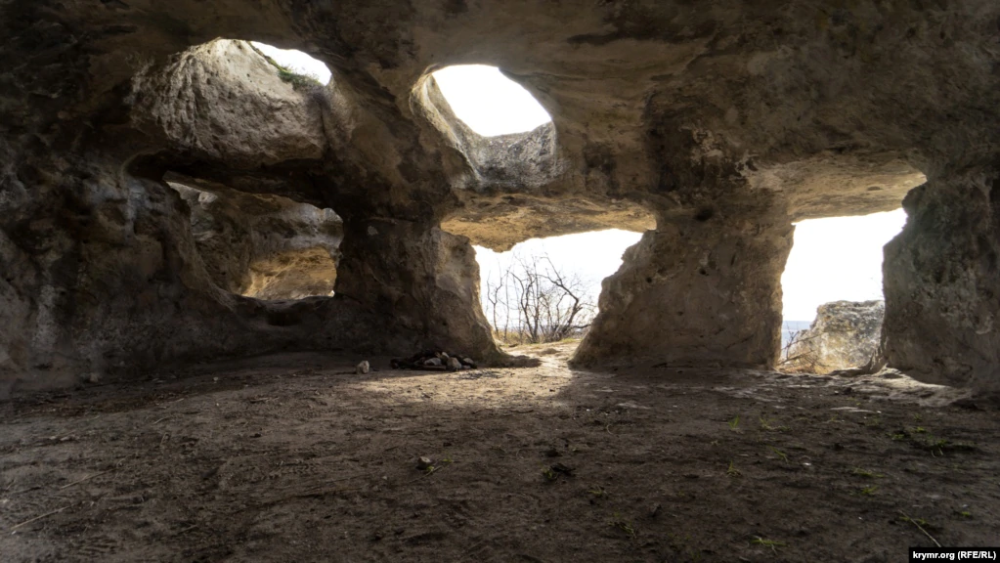
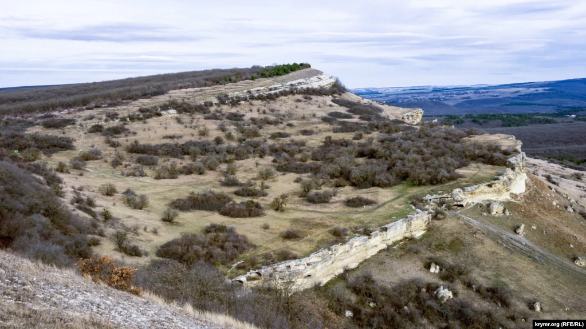
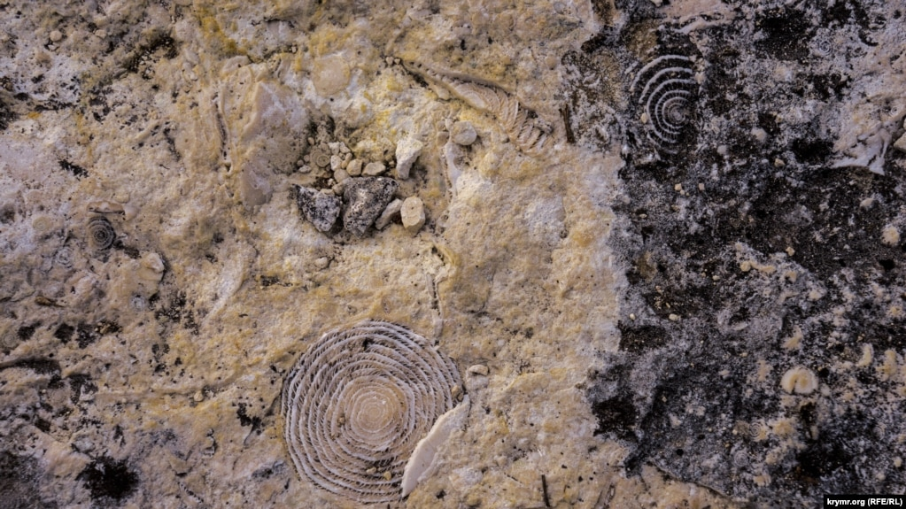

Старый карьер на юго-западном крае куэстовой гряды, что по соседству с Баклой, превращен в свалку. Как рассказывают старожилы, местный завод строительных материалов прекратил резать там альминские блоки в начале 70-х годов прошлого столетия

Статус памятника природы и истории Крыма пещерный город Бакла официально получил еще в 1947 году

Куэстова гряда над долиной реки Бодрак. Река практически полностью пересохла, на ее берегу промышленным способом дробят диоритовый камень (слева) из близлежащего урочища Сараман

Фрагменты глиняной посуды в отдельных местах проселочной дороги, ведущей к урочищу, попадаются чуть ли не на каждом шагу

Большинство пещер, где жили люди, вырублены у самой кромки обрыва. Таких пещер более ста, в основном хозяйственного и фортификационного назначения. На заднем плане виднеется заснеженный Чатыр-Даг

В древнем христианском храме. Таких на Бакле несколько. Неподалеку в 1984 году был обнаружен каменный подземный склеп с инвентарем второй половины VIII-IX веков. В стене склепа устроена глубокая ниша, в которую вмонтирована известняковая плита с греческой надписью

В рельефе нижнего уступа куэсты выделяется четыре мыса Баклинского нагорья, на которых сосредоточены памятники археологии – Передовой, Центральный, Церковный и Крепостной

Верхний пласт откоса – это нуммулитовый известняк. Нуммулиты (от латинского – монетка) – род раковинных
одноклеточных организмов. При постройке знаменитых египетских пирамид использовался именно нуммулитовый
известняк.
Нуммулиты (лат. Nummulites, от лат. nummulus — монетка) — род одноклеточных организмов отряда фораминифер.
Ископаемые остатки представителей рода известны из верхнемеловых и палеогеновых отложений тропиков и
субтропиков Европы, Азии, Африки и Америки.
Известковая, пропитанная тонкими порами раковина, симметрически завитая спирально и имеющая форму округленной
пластинки или двояковыпуклую (реже до шарообразной); число оборотов очень велико, высота, а также и ширина их
возрастает весьма постепенно; число камер очень велико, последние обороты по большей части замкнуты в виде
кольца, окружающего всю раковинку (переход от спирального расположения камер к круговому), последние обороты
совершенно обхватывают предыдущие, отверстие простое, система каналов в стенках раковины и её перегородок очень
хорошо развита. У подрода Numullina полости камер продолжаются по бокам до оси раковины, и снаружи обыкновенно
виден лишь последний оборот её; перегородки то радиальные, то различным образом изогнутые или извитые, иногда
разветвленные и подразделяющие боковые части камер на мелкие камеры; сюда относится один лишь современный вид и
ряд ископаемых. Близки к нуммулитам и принадлежат к тому же подсемейству (Nummulitinae) и семейству
(Nummulitidae) роды Polystomella, Operculina, Cyclammina, имеющие и современных представителей.
Крутой откос куэсты в Крыму состоит из пласта прочного мшанкового и залегающего поверх него нуммулитового
известняка.
Характерен для эоценовых отложений океанического типа. Сюда относятся крупные корненожки, с известковой
скорлупой, кругообразной или чечевицеобразной формы, величиной от размеров булавочной головки до серебряного
рубля. Скорлупка составлена из многих спирально возрастающих оборотов, разделенных поперечными перегородками на
многочисленные, сообщающиеся между собой, камеры. Нуммулиты появляются уже в каменноугольной системе и
существуют до настоящего времени, но наибольшего развития достигали в век эоцена. Скорлупки нуммулитов
переполняют местами громадные толщи нуммулитовых известняков, широко распространенных по земной поверхности и
обнажающихся даже на снежных вершинах Пиренеев, Альп, Карпат и Гималайских гор, несомненно свидетельствуя, что
в сравнительно недавние геологически времена этих гор не существовало и на месте их разливался громадный
эоценовый океан, на дне которого мириадами погребались нуммулиты и другие современные им организмы.